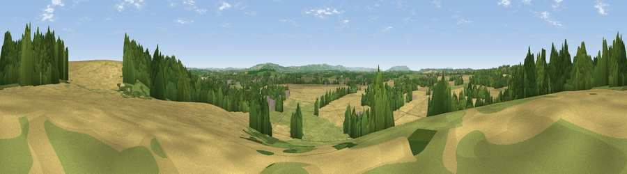

Viewpoint near Binton
#23695 in England · top 52% of its area beats it · near BintonThe view, rendered

A 360° render of this exact spot computed from the terrain model, tree cover and land cover — summer colours, afternoon light, calibrated against photographs of famous viewpoints. Real trees, hedges and buildings will differ in detail.
The panorama
Grey silhouette: terrain skyline in each direction (720 bearings, Earth curvature and refraction included). Dashed green: skyline with trees (+15 m) and buildings (+8 m) as obstacles. Blue strip: how far the ground is visible on each bearing.
Where the view opens
Wedge length = distance to the farthest visible ground on that bearing (vegetation-aware). Rings at 10, 25 and 50 km.
What fills the view
51% cropland · 28% woodland · 20% grassland · 1% built-up
Angular shares of the visible panorama (visual magnitude), not map area. Landscape diversity 0.47 (0–1 Shannon).
Key numbers
More beautiful places nearby
The staircase of upgrades: each row has a higher view potential than everything closer. Driving times are estimates from straight-line distance, calibrated against real road routing — check an actual route before setting out.
| Place | Direction | Drive | Score |
|---|---|---|---|
| Viewpoint near Binton | E · 1 km | ~2 min | 56.2 |
| Bordon Hill | E · 4 km | ~9 min | 59.0 |
| Viewpoint near Exhall | WNW · 4 km | ~10 min | 62.1 |
| Viewpoint near Arrow | WNW · 8 km | ~16 min | 63.1 |
| Lodge Hill | NNW · 8 km | ~17 min | 64.0 |
| Viewpoint near Meon Vale | SSE · 9 km | ~18 min | 77.0 |
| Broadway Hill | S · 18 km | ~30 min | 77.7 |
| Viewpoint near Elmley Castle | SW · 21 km | ~35 min | 80.5 |
52.17981, -1.80362 · source: screening · position refined by local search. Computed location — check access rights before visiting.